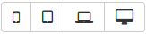
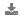

Create or modify UI artifacts
The UI Designer is a powerful application to design Bonita custom pages, layouts, forms, custom widgets and fragments.
Custom pages are used in Bonita Portal custom profiles or in custom BPM applications.
Forms are used to instantiate a process or to execute a human task.
The UI Designer runs in a browser. Launching it from Bonita Studio starts a web server and opens your default browser.
Starting the UI Designer
From Bonita Studio menu bar
Open the Development menu then choose Open UI Designer, or click the UI Designer icon in the coolbar. This is useful to create application pages that are not linked to a process, but display business information whose changes are managed by underlying processes.
From a form mapping tab
Select a human task or a pool, go to the Details panel, Execution tab. Then go to the relevant form mapping tab:
- Instantiation form for a form to start a process instance
- Form for a form on a human task
With the form type set to UI Designer, you can select a form from the dropdown list and click the pencil icon to edit it, or you can choose Create a new form. This is the way to go to create forms as the Studio will auto-generate a form based on the process instantiation or task execution contract.
You can also create a customized overview form, to display a summary of the case to the users, either in a case details page, or in the tasklist, to give some context to the task to do.
To do so, go to the pool Details panel, Execution tab, and click _Overview page.
With the form type set to UI Designer, you can select a form from the dropdown list and click the pencil icon to edit it, or you can choose Create a new form.
Design a page, layout, form, or fragment
After a page, layout, form, fragment is created, you can update it in the Page editor. Update your page, form or fragment by dragging and dropping widgets from the palette to the whiteboard. Edit widget properties in the widget properties panel, create data, and bind it to the widgets.
In the Enterprise, Performance and Efficiency editions, you can optimize the page or form design for a given device type by configuring device-specific values for the Width property for widgets. Use the a device types bar in the Page editor to choose the target device type. 
Custom widget is a special artifact that we will explain in a later chapter.
Preview a page, layout, form, or fragment
You can preview page, form and fragment rendering by clicking the Preview button. Another browser window opens with the artifact as it will be displayed after deployment. If you update the page, form or fragment, the preview is automatically refreshed when you save (not available for Internet Explorer 9).
In the Enterprise, Performance and Efficiency editions, you can use the a device types bar on the preview screen to choose the target device type.
The preview displays the artifact as it would be displayed on the selected type of device.
Custom widget is a special artifact that we will explain in a later chapter.
Export an artifact
You can export a page or a layout to deploy it in Bonita Portal as a custom page.
You can export any artifact to import it into another UI Designer.
To export an artifact, click the Export button on the Page editor or the UI Designer home page. A zip file is downloaded to your computer. It contains a Bonita custom page, which also suitable for import into another UI Designer. on the Page editor or the UI Designer home page. A zip file is downloaded to your computer. It contains a Bonita custom page, which also suitable for import into another UI Designer.
After export you can modify your page or layout code by directly editing the code located in resources folder. Be aware that such a modification to the code will work when the page or layout is deployed in Bonita Portal but it may be broken if you import the page into another UI Designer.
Import an artifact
To import an artifact from another UI Designer, go to the UI Designer home page and click the Import button . When you import a page, layout, form or fragment, its dependencies (such as custom widgets and fragments used are automatically be imported too.
Warning: an artifact that has not been designed with the UI Designer cannot be imported into the UI Designer.
Pages and forms in .bos/.bar file
When you generate the .bar file of a process, the mapped forms created with the UI Designer are embedded in the file. Application pages are not embedded. When you deploy the process in Bonita using the .bar file, forms are imported and deployed. Pages and layout must be imported one by one.
To import artifacts in another Studio, you can export pages and forms in the process .bos file. In the list of artifacts to insert in the .bos file, forms are checked by default, but not pages. When you import this .bos file into another Bonita Studio, forms and pages that you have checked are available in the UI Designer of that Studio.